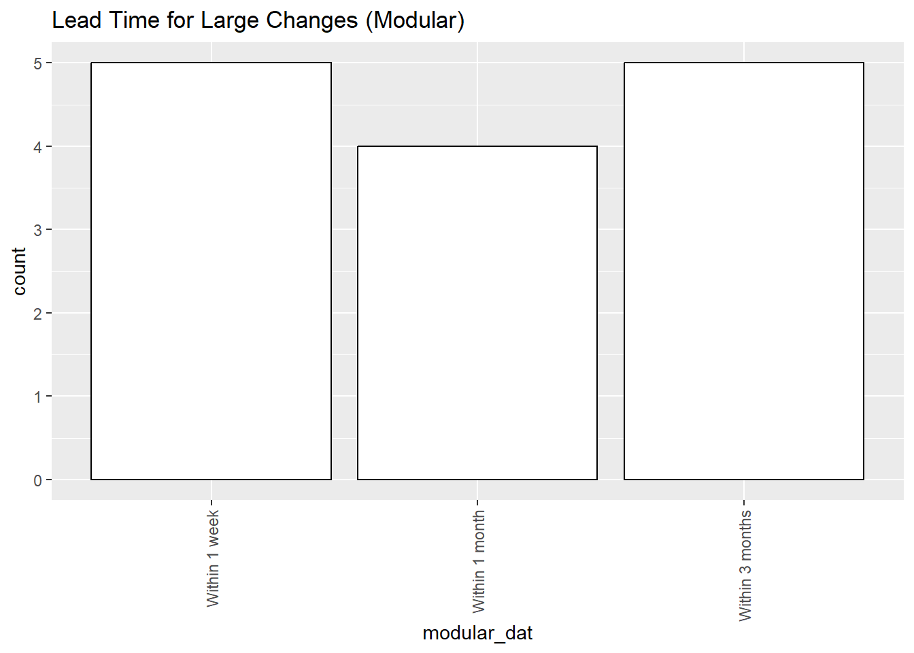

7 Lead Time
In this section, we ask questions about the lead time of (1) small and (2) large changes to CPI Production Systems.
In the context of software systems, lead time measures the time it takes for a committed code change to reach production, which reflects the efficiency of the software delivery process (Forsgren, Humble, and Kim (2018)).
Given that we are looking at Complex Analytical Systems rather than traditional software systems in this survey (see Section 1.4), we modify this definition slightly to refer to the total amount of time required to get an end-to-end change to a CPI Production System implemented, which could include activities in addition to code implementation such as data analysis, methodology research, and discussions with data providers.
Lead time is generally regarded as a very important performance metric, and short lead times are generally considered better than long lead times.1
We prompt the respondent with some examples of small and large changes before asking the lead time questions.
Example of a small change:
A small piece of code in a system needs to be modified to update business logic for processing a particular data source.
A new sheet needs to be added to an Excel Workbook to perform a new calculation in a system.
Examples of a large change:
An entirely new methodology was recently discovered and needs to be introduced as one of the options in an elementary aggregate system.
A system was previously ingesting survey data, but it now needs to also ingest retail scanner data.
7.1 Lead Time (Small Changes)
Respondents are presented with the following question.
Overall, the majority of lead times for small changes are between 1 day and 1 week, with a minority of respondents indicating small changes happening within 3 months (i.e., 3 months or less).
Our expectation is that small changes of the magnitude we described in the question prompt should take teams at most a few days to implement, test, and integrate into production systems. We were a bit surprised to see a non-trivial fraction of the sample reporting lead times of “Within 1 month” or “Within 3 months” for small changes.
It is also noteworthy that NSOs with monolithic representative systems were more likely to report lead times for small changes of “Within 1 day”, whereas NSOs with modular representative systems were more likely to report lead times for small changes of “Within 1 week”.
Our hypothesis here is that, by definition, a modular representative system is more likely than a monolithic representative system to span two or more teams. Therefore, small changes may still need to be reviewed by a member on each team. It is reasonable that it might take more than one business day to find a time where the various team members are available to meet, so this alone could cause a small change to take more than one day.
In either case, our view is that “Within 1 day” and “Within 1 week” are both reasonable answers to this question.
With respect to team composition, Stream-Aligned teams, IT-Only teams, and Analyst-Only teams had lead time distributions that were close to the overall lead time distribution. The most common response for Other Mix teams is “Within 1 month”, but the sample size for this team type is too small to conclude anything meaningful here.
7.2 Lead Time (Large Changes)
Respondents are presented with the following question.

Overall, the lead time for large changes was very right skewed, with the most common response being that large changes happen “Within 1 month”.
It is interesting that, unlike with small changes, NSOs with Monolithic representative systems are more likely to report lead times of “Within 1 year” or “More than 1 year”, and they are also more likely to report an answer of “Too complex” or “Can’t be modified”.2
This result is consistent with industry knowledge (Ford et al. (2021), Richards and Ford (2020)) as well as earlier findings in this report (e.g., sec-age). Monolithic systems are more likely to have components that are highly coupled (inter-connected) compared to modular systems. This high degree of coupling not only makes it more difficult to reason through changes to the system, but it also requires more rigorous testing to ensure that a large change doesn’t break a seemingly unrelated component. Therefore, it is not surprising to observe that NSOs with monolithic representative systems are more likely to report higher lead times compared to NSOs with Modular representative systems.
When looking at the distribution of lead times for large changes by team type, there are several noteworthy observations.
First, Stream-Aligned teams and Analyst-Only teams were more likely to report lead times of “Within 1 month” compared to any other answer. Stream-Aligned teams and Analyst-Only teams were a bit more likely to report shorter lead times compared to IT-Only teams, and were much more likely to report shorter lead times compared to Other Mix teams.
This finding is consistent with the work of Skelton, Pais, and Malan (2019), which suggests that Stream-Aligned teams organized around an end-to-end slice of a particular business domain tend to move faster.3
It is also worth noting that “More than 1 year” is a somewhat common answer across all team types, suggesting that a fraction of NSOs probably struggle with high lead times for reasons other than team types.
We hypothesize that the lack of shared domain context in Other Mix teams could explain why their reported lead times are much higher than the other 3 team types. As discussed in Chapter 5, the lack of a shared domain context increases communication overhead as all parties involved need to spend additional time bridging knowledge gaps. This extra communication overhead could extend each step of the system development process, leading to longer lead times overall.
One important point to note here is that short lead times are good as long as a certain minimum standard of quality is met. For instance, shorter lead times are not necessarily better if they are associated with a significant drop in the quality of the output.↩︎
For confidentiality reasons, we grouped “Too complex” and “Can’t be modified” into one category in the figures on this page.↩︎
We are glossing over a lot of nuance here for simplicity. For readers who are interested in a more comprehensive overview of the work of Skelton, Pais, and Malan (2019), we recommend reading through the Team Topologies Key Concepts website.↩︎